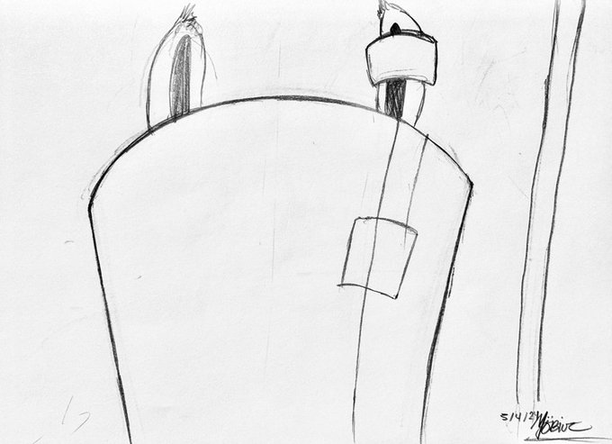

Pictured above is the current state of the account. Daxter, from what I can gather so far with the account, is very popular amongst the Playstation fandom, particularly the Jak and Sly Cooper games. However, Daxter doesn't seem to be in the best of shape now. What has he done that would've wound him in the hospital? Let's find out!
As Daxter begins to gain more popularity, he decides to make full use of his Twitter account to create obscene comments about his best friend Jak. Needless to say, Jak was not amused.
The comments were becoming more abrasive and insulting every passing moment, and Jak had to Daxter on a timeout. However, this does not disuade the ottsel into persuading his audience to demand an account for Jak.
As a form of mockery for whenever Jak gains control of his account to monitor his online interactions, Daxter creates the eponymoous Jak account, with the offending icons that bothers Jak so. The situation was clearly getting out of hand, resulting in another user, posing as another chatacter from the Jak franchise, Keira, to step in and act as a mediator between the two boys.

Despite her best intentions, Jak and Daxter proceed to fight online on their not-so respective accounts. The fight spirals out of control to the point where Keira's father, Samos, had to step in to break the boys up. Daxter goes as far as to insult Samos akin to how he insults Jak, albeit this time comparing Samos to the Lorax.


The fight continues for quite some time, causing Samos to propose that both Jak and Daxter should clean his hut over the weekend to eir out their differences. Keep in mind Daxter does not agree to close the Jak mockery account. However, at some point, Daxter reveals a rare moment of vulnerability expressing his distraught over how he's been overlooked despite his heroic efforts in the past. However, his juvenile attitude still pops up despite his distraught.
Keira admits to "hacking" the person's account in order to break Jak and Daxter away from each other. Samos penalizes her, but her punishment isn't as severe as the boys. While Daxter gloats about this, assuming Keira would have to bring them refreshments during their weekend punishment, Samos mentions Pecker, a half bird, half monkey creature, will be doing this task instead. Shaken up, Daxter admitted to hiring an assassin at some point during his tenure on Twitter to kill Pecker, as the two never got along throughout the original games.

Saturday comes, and Daaxter comments back on his Orange Lightning account expressing how happy he is to have his computer back. Jak jumps in and criticizes Daxter for avoiding responsibility. Daxter lies claiming he had other arrangements already set up between he and his girlfriend to avoid cleaning up Samos's hut with Jak. He also continues to insult Jak with more "Jackass" cooments, while also subtly making fun of his weight.
Torn, a friend of Jak's, makes a quick, condescending comment towards Daxter. Daxter continues to take the warring situation with a grain of salt with his usual combacks and quips.
Jak has officially had it with Daxter's puerile comments, and decided to turn the tables himself. Needless to say, Daxter's moronic quips were going to catch up with him.
As Jak is virtually tearing Daxter a new one, several characters poke their heads in to stop the fight. This obviously falls under deaf ears.
A few hours pass, and Jak comments looking quite guilty. After activating his Dark Form to beat the ever living snots out of Daxter, the ottsel now quietly resides at the local Haven City Hospital.
Jak realizes that his overreaction has led to him cleaning up Samos's hut all weekend without any help. Ironically enough, Jak pretty much made himself into the very "jackass" Daxter was calling him all this time.
By the time this assignment is done, Daxter is currently in a full body cast, unable to type nor comment on Twitter at the moment. Here's hoping that Daxter will learn his lesson in not pissing the wrong people off, both online and offline, once he makes a full recovery.
